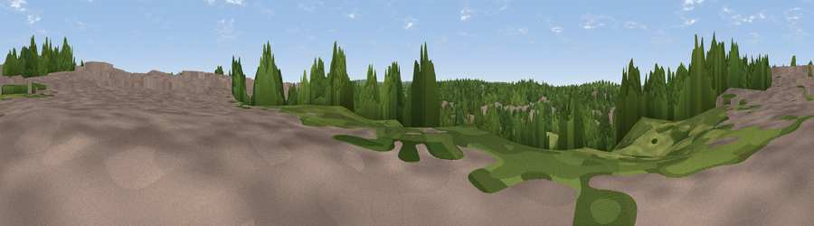

Martin's Hill
#45841 in England · top 89% of its area beats it · near Bromley · access?Where it is
The exact computed spot (TQ 39961 69242). Click the marker for map links.
Public access: no public right of way or access land is recorded at this exact spot — it may be on private land. Computed from Natural England's CRoW access layer and OpenStreetMap rights of way — not the legal definitive map. Always verify locally.
The view, rendered

A 360° render of this exact spot computed from the terrain model, tree cover and land cover — summer colours, afternoon light, calibrated against photographs of famous viewpoints. Real trees, hedges and buildings will differ in detail.
The panorama
Grey silhouette: terrain skyline in each direction (720 bearings, Earth curvature and refraction included). Dashed green: skyline with trees (+15 m) and buildings (+8 m) as obstacles. Blue strip: how far the ground is visible on each bearing.
Where the view opens
Wedge length = distance to the farthest visible ground on that bearing (vegetation-aware). Rings at 10, 25 and 50 km.
What fills the view
53% woodland · 30% built-up · 17% grassland
Angular shares of the visible panorama (visual magnitude), not map area. Landscape diversity 0.44 (0–1 Shannon).
Key numbers
More beautiful places nearby
The staircase of upgrades: each row has a higher view potential than everything closer. Driving times are estimates from straight-line distance, calibrated against real road routing — check an actual route before setting out.
| Place | Direction | Drive | Score |
|---|---|---|---|
| Viewpoint near Grove Park | N · 2 km | ~5 min | 24.5 |
| Viewpoint near Addington | SW · 6 km | ~13 min | 32.7 |
| Viewpoint near Catford | NW · 7 km | ~14 min | 33.8 |
| Viewpoint near Eltham | NNE · 8 km | ~16 min | 34.0 |
| Viewpoint near Croydon | SW · 8 km | ~16 min | 34.6 |
| Viewpoint near Well Hill | ESE · 11 km | ~21 min | 35.5 |
| Viewpoint near Woldingham | S · 12 km | ~22 min | 40.1 |
| Viewpoint near Westerham | SSE · 14 km | ~25 min | 43.5 |
51.40494, 0.01082 · source: osm peak · position refined by local search. Computed location — check access rights before visiting.